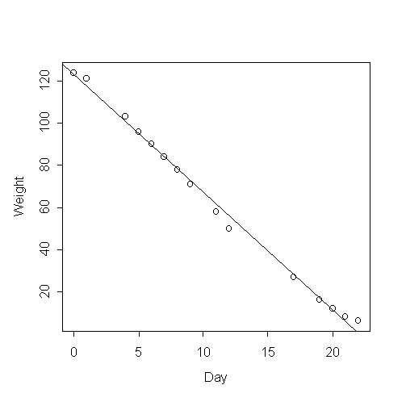
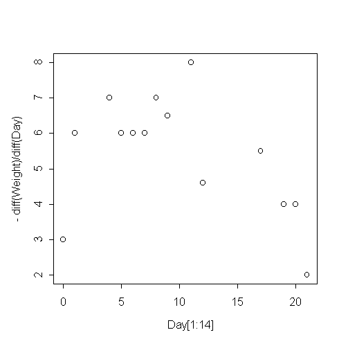

| / Home |
Keywords: linear regression, residuals
Do you use up the same amount of the soap in the shower each morning, or does it depend on the size of the bar of soap? This data was collected by Rex Boggs of Glenmore State High School in Rockhampton, Queensland. Rex writes:
I had a hypothesis that the daily weight of my bar of soap in my shower wasn't a linear function, the reason being that the tiny little bar of soap at the end of its life seemed to hang around for just about ever. I wanted to throw it out, but I felt I shouldn't do so until it became unusable. And that seemed to take weeks.
Also I had recently bought some digital kitchen scales and felt I needed to use them to justify the cost. I hypothesised that the daily weight of a bar of soap might be dependent upon surface area, and hence would be a quadratic function.
I kept records for three weeks (the life of the bar), and was amazed to find that the data was linear with a very high R2 value, until the last few days of its life.
The data ends at day 22. On day 23 the soap broke into two pieces and one piece went down the plughole ...
| Variable | Description | ||
| Date | Date of observation | ||
| Day | Number of days since beginning of experiment | ||
| Weight | Weight of soap bar (grams) | ||
Data file (tab-delimited text)
| The data was collected and contributed by Rex Boggs, Glenmore State High School, Rockhampton, Queensland, Australia. |
> plot(Day,Weight)

> plot(Day[1:14],-diff(Weight)/diff(Day))

|
Home - About Us -
Contact Us Copyright © Gordon Smyth |